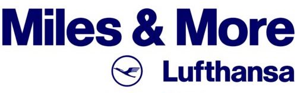

In Germany, the main and virtually exclusive loyalty program is the Miles & More of the Lufthansa Group.
 The Miles & More, like the vast majority of loyalty programs, is free, and you can simply register on the program's website, without ever having traveled with any of the companies that are part of the program or are partners of Miles & More.
The following airlines adopt the Miles & More as their loyalty program:
- Lufthansa
- Swiss International Airlines
- Austrian Airlines
- Brussels Airlines
- Eurowings
- Discover Airlines
- LOT Polish Airlines
- Croatia Airlines
- Air Dolomiti
- Luxair
When flying with any of these airlines, you earn miles directly with Miles & More.
Lufthansa is the main airline of the Star Alliance, the world's largest
airline alliance.
This also allows you to accumulate miles when traveling with other alliance airlines and use them to redeem tickets not only with Lufthansa Group
airlines but also with other Star Alliance members,
using Miles & More for this purpose.
You'll earn points or miles by flying with a total of 35 different airlines.
This significantly expands the possibilities for using Miles & More miles since you can use them for redemption on dozens of airlines.
Starting January 1, 2024, Miles & More has adopted a new status qualification system; information and details are available on the program's website.
Many other Star Alliance airlines also have their loyalty programs, and there's no point transfer between these programs. This is a crucial detail in deciding where to accumulate your miles when booking a ticket with any Star Alliance airline.
Don't be intimidated by the interplay between airlines, loyalty programs, and alliances. It's not as complicated as it seems, and while it's great
to understand how everything works,
you don't need to be an expert to earn and redeem miles for tickets.
Chasing the perfect and cheapest redemption is a sales pitch term; don't worry about it. In the near future, we'll explain how everything works
and provide some examples on this site.
For now, the focus is on understanding the possibilities for earning miles and points.
Payback

The Payback is the largest points program in Germany,
also present in other countries such as Austria, Italy, Switzerland, etc.
Payback allows the accumulation of points at various partner stores, including online shops, supermarkets,
pharmacies, gas stations, among others.
Points collected in Payback can be converted into Miles & More miles at a 1:1 ratio, providing a convenient option, given that accumulating Payback points is easier than earning miles directly with Miles & More.
Similar to Miles & More, Payback is free, and you can register directly on the program's website.
How does Payback work?
To accumulate Payback points, you need to have a Payback card, which can be requested for free on the program's website. The card is sent by mail and can be used in physical stores to earn points. However, you can also use the virtual card in the Payback app without the need for the physical card.
 For every €2 spent at partner stores, 1 Payback point is accumulated.
For every €2 spent at partner stores, 1 Payback point is accumulated.
This point is called the base point, and it is the minimum point that can be earned at any partner store.
Payback's significant advantage is the opportunity to multiply points by 5, 10, 20, or even 40 times, depending on the partner store
and ongoing promotions. This makes Payback the best option for organically accumulating miles in Germany.
For example, in a €100 purchase, 50 base points are accumulated. When a 10x coupon is used, an additional
500 points are accumulated (50 BP x 10), totaling 500 points.
However, it's important to highlight that accumulating points strategically requires dedication and organization. This process takes time and patience; if it were simple and quick, it would lose the financial advantage for both Payback and its partners.
Once or twice a year, Payback offers points transfer promotions to Miles & More with bonuses ranging from 20% to 30%.
These promotions are announced by email and can also be found on the program's website.
It's important to plan to transfer points during these promotions as they provide short-term opportunities to multiply your points effortlessly.
Tips for Using Payback
- The coupons available in the app are personalized and may differ between accounts. It's common to have coupons in your account that are not available in others you compare.
- Have separate accounts for yourself and your partner(s) or children. Since the coupons are individual, having separate accounts will provide a wider variety of coupons and promotions.
-
Centralize point transfers in a single Miles & More account. If you have different accounts for your family members, points can be transferred
to any Miles & More account, even if it's not in the same name as the Payback account holder.
For promotional transfers, you need a separate Miles & More account for each Payback account, but you can create a Mileage Pool to centralize miles from all accounts within Miles & More. - DO NOT activate automatic transfers to Miles & More; wait for the bonus transfer promotions that occur at the end of the year (and sometimes in the middle of the year as well).
- Remember to accept the use of cookies when making online purchases using links within the Payback website.
-
Earn significant extra points by booking hotels through Payback. There are almost always good coupons for platforms like Booking, H-Hotels,
Expedia, among others.
The extra points earned for hotel bookings are usually credited only between 40 and 60 days after the checkout date. Pay attention to the rules to ensure you don't think you've lost your points.
The same applies to purchases on Amazon and other online stores; always check the rules for each coupon.
Credit Cards

Credit cards represent an excellent way to organically accumulate miles, potentially doubling the accumulations when combined with Payback.
Everything described in the Payback section is independent of the payment method. However, when using credit cards, it's possible to accumulate Payback points and Miles & More miles simultaneously, a double scoring. Additionally, this option allows for point accumulation not only in Germany but anywhere in the world.
There are three main ways to accumulate points via credit cards in Germany:
- Cards that accumulate Payback points and can be transferred to your Miles & More account. (Payback cards)
- Cards that directly accumulate Miles & More miles. (Lufthansa and Eurowings cards)
- AmEx cards that accumulate Membership Rewards and can be transferred to various loyalty programs, hotel networks, and converted to Payback points.
The options for credit cards in Germany that generate miles or Payback points are limited, but some are noteworthy. Below are the main options and the accumulation rates of points/miles:
| Card | Points per €1000 spent |
|---|---|
| AmEx MR (Turbo)1 converted to Payback points2 | 750 |
| AmEx Payback (Turbo) 3 | 666 |
| AmEx MR converted to Payback points | 500 |
| Miles & More / Eurowings Cards4 | 500 |
| AmEx Payback card5 | 333 |
| Visa Payback card | 200 |
- The Max/Turbo feature from American Express increases the card's points accumulation rate and must be activated as an additional feature of your card, costing €25 per year.
-
American Express Membership Rewards points can be transferred to Payback at a 2:1 ratio. (1000 MR = 500
Payback points)
It is the only available way to use Membership Rewards points in Miles & More – conversion to Payback points, and then transfer to Miles & More. - Currently, it is no longer possible to activate the Turbo feature for AmEx Payback cards. Cards that already have the feature can still use it, but it is uncertain whether the feature renewal will be possible.
- The major difference between Miles & More and Eurowings cards is that miles accumulated by Eurowings cards have a validity of 36 months.
-
When using AmEx Payback and Visa Payback cards at a partner store, you receive base points + multipliers + the card's accumulation rate.
With the Turbo function, the card's accumulation rate is doubled. AmEx Payback card: Accumulation rate of 1 Payback point per €3 spent.
Visa Payback card: Accumulation rate of 1 Payback point per €5 spent.
As shown in the table, American Express cards offer the highest points accumulation, despite their limited acceptance in Germany. Although AmEx owns Payback, acceptance in physical stores is still restricted. However, for online use, acceptance is generally equivalent to Visa and Mastercard.
Important: AmEx Membership Rewards points can be transferred to various loyalty programs, not limited to Miles & More and Star Alliance airlines.
Additionally, depending on the chosen AmEx card, various other benefits are offered, such as hotel network status, access to airport VIP lounges, restaurant and car rental bonuses, among others, not offered by other Visa/Mastercard cards.
If you opt for an AmEx card, it is mandatory to have a Visa or Mastercard for use where AmEx is not accepted.
Recommendation: Considering only mileage accumulation, the most basic suggestion for your card portfolio is as follows (in order of priority):


1. American Express Card (the green card) with MR Turbo
2. Miles & More Credit Card Blue
3. (Backup) Eurowings Credit Card Classic
4. (Backup 2) American Express Payback with Turbo function (free and can occasionally grab some good promotions)
Important: If you are applying for more than 1 American Express card, always request the AmEx Payback last.
Other important points about credit cards that have not been considered here:
- Welcome Bonus: many cards offer an initial bonus, which can be advantageous, but it's necessary to observe the conditions to receive it.
- Insurances: various cards offer travel, car rental, purchase insurances, etc. It's recommended to assess if these insurances are suitable for your needs.
- Annual Fee: most cards have an annual fee, but some offer waiver in the first year or vouchers/bonuses for purchases, theoretically "reducing" the annual cost of the card.
- Additional Card: AmEx cards usually provide an additional card at no cost, which can be interesting to increase miles accumulation. For other cards, you need to pay for the issuance of an additional card.
Important Tip for AmEx Cards: For online use in stores that do not accept AmEx, you can add the card to PayPal as the default payment method and use PayPal to make online purchases.
Miles & More Shopping Offers

Miles & More offers various options for accumulating miles, in addition to flying with partner airlines.
One of the most interesting options is the Miles & More
Offers,
which allows you to earn miles on online purchases from various partner stores.
Various temporary promotions are also offered for earning miles on online purchases, car rentals, fueling, hotel reservations, etc.
These promotions are usually announced via email but can also be found on the program's website.
Pagamento de contas pelo Revolut

Quem mora na Alemanha sabe que é muito difícil pagar contas com cartão de crédito, quase impossível na verdade.
A maioria das contas são pagas por transferência bancária ou por débito automático na conta.
No entanto, o Revolut oferece uma
alternativa a esse problema.
O Revolut é um banco digital gratuito
similar ao N26.
Lembrando que o Revolut é uma empresa britânica com licença bancária emitida pela Lituânia para suas operações na Europa (fora
do Reino Unido),
totalmente regulamentado e dentro das leis da União Europeia.
O Revolut é uma excelente opção para quem viaja muito para locais com outras moedas, pois permite a conversão de moedas com
taxas muito boas,
melhores do que o Wise.
 Alguns exemplos para ilustrar o uso do Revolut para pagamento de contas via cartão de crédito:
Alguns exemplos para ilustrar o uso do Revolut para pagamento de contas via cartão de crédito:
- Dentro do Revolut, você vai em adicionar dinheiro, e "deposita" o valor da conta que é preciso ser paga. Ex: 100€. Nesse passo, seu cartão de crédito foi utilizado e vai acumular os pontos/milhas normalmente.
- Após efetuado o depósito, o valor fica disponível para uso imediato, então agora você simplesmente faz uma transferência bancária utilizando os 100€ depositados para pagar a conta.
Pequena varição do exemplo 1, num cenário que você pague contas num total de 2000€ todo mês:
- Deposite 2000€ de uma vez só na sua conta Revolut utilizando o cartão de crédito.
- Em transferências, crie transferências agendadas para todas as contas fixas (com valores fixos) do mês, e as configure para que se repitam automaticamente todo mês. Quando o dia de execução chegar, o saldo da conta será utilizado.
Exatamente isso, pelo Revolut é possível fazer transferência da sua conta em Euro para uma conta bancária no Brasil, em Real!
E o Revolut tem a melhor taxa de conversão para enviar dinheiro para o Brasil, pode fazer o comparativo com o Wise.
(e para mais dezenas de outros países)
Se além de pagar contas você também envia dinheiro pro Brasil, usar o Revolut pode ser um grande diferencial pra esse tipo de gasto que geralmente quem mora na Alemanha não se beneficia de nada.
Importante:- No momento, Janeiro de 2024, apenas os cartões Miles & More da Alemanha, emitidos pelo DKB, permitem o acúmulo de milhas ao pagar contas com o Revolut.
-
Outros cartões de crédito, como os da Eurowings, emitidos pela Barclays, não acumulam milhas ao pagar contas com o
Revolut.
- Cartões de crédito American Express, não são aceitos pelo Revolut.
- Em 2025, os cartões Miles & More da Alemanha, serão emitidos pelo Deutsche Bank, ainda é incerto se essa estratégia funcionara com os novos cartões.
-
Existem casos de cartões serem bloqueados pelo DKB, por suspeita de fraude ou "mal uso", se você depositar o valor total
do seu crédito no Revolut
e não utilizar o cartão para nada mais.
Isso na verdade pode prejudicar todos usuários do Revolut, pois o DKB pode simplesmente bloquear o acúmulo dessas milhas para todos os cartões Miles & More.
Utilize esse recurso com moderação e bom senso.
Conclusão: O Revolut é uma excelente opção para acumular milhas ao pagar contas com cartão de crédito, mas apenas para quem possui o cartão Miles & More da Alemanha, emitido pelo DKB*.
* Se você já conseguiu acumular milhas com outros cartões de crédito ao pagar contas com o Revolut, por favor entre em contato usando os links no rodapé.
Alternativas?
Existem alguns outros aplicativos que supostamente também funcionam para transferência bancária fazendo o pagamento via
cartão de crédito, entre eles: PaySend,
Remitly,
e o Wise, que é uma plataforma maior e reconhecida.
Todas as 3 plataformas citadas cobram taxa para realizar transferência na mesma moeda, por isso o Revolut é a melhor opção
disponível.
Nenhuma dessas plataformas tem licença bancária, lei bem os termos de uso de cada uma para entender possíveis riscos.
Wunschgutschein - Gift Cards
O Wunschgutschein é um grande portal de cartões vale-compra e sempre tem ótimas promoções em parceira com o Payback.
Geralmente as promoções oferecem bons multiplicadores e são oferecidos tanto pelo Payback, como por outros parceiros como Rewe e Penny.
É passível utilizar os vale-compras da Wunschgutschein em mais de 300 lojas e serviços, online e/ou físicas.
Com isso, é possível planejar grande compras em lojas parceiras do Wunschgutschein e utilizar as promoções pelo Payback
para comprar vale-compras e utilizar depois nas lojas de seu interesse.
Dica adicional: o mesmo acontece para outros tipos de vale-compras, como cartões da Apple, PlayStation Store,
Google Store,
Zalando, etc.
Fique sempre de olho no aplicativo do Payback, como essas promoções são intercaladas entre os parceiros, todo mês tem uma ou
duas promoções válidas
em diferentes parceiros e sempre é possível acumular muitos pontos extras com os multiplicadores.
Isso é tudo?
Não, existem outras maneiras de acumular milhas, mas as opções descritas aqui são as mais relevantes e que oferecem os
melhores benefícios.
Para os brasileiros, ainda existe a possibilidade de utilizar plataformas como a Livelo, Esfera e Smiles.
Essas plataformas oferecem a possibilidade de compra e transferência de pontos
para várias companhias aéreas ou programas de fidelidade, mas nenhuma dessas plataformas tem parceria com o Miles & More, e
tudo descrito aqui
pode ser utilizado independente se você acumula milhas em outros programas de fidelidade.
O foco é acumular milhas no Miles & More e Payback com seus gastos do dia-a-dia.
Se você conhece outras maneiras de acumular milhas na Alemanha, por favor entre em contato usando os links no rodapé.
Conteúdo aberto e gratuito
Nós acreditamos que o conhecimento deve ser aberto, compartilhado e acessível à todos.
Por isso disponibilizamos todo o conteúdo do site de forma gratuita, sem qualquer tipo de restrição,
com o código aberto para quem quiser copiá-lo. Não tem venda casada ou pegadinha.
Se o conteúdo foi de alguma forma útil para você, considere compartilhar esse site com seus amigos e familiares que moram na
Alemanha.
Considere usar nossos links de referência para se cadastrar em qualquer um dos serviços mencionados aqui (totalmente opcional):